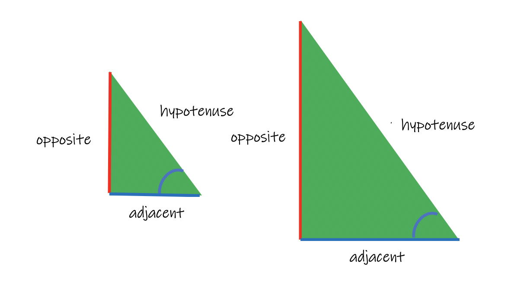
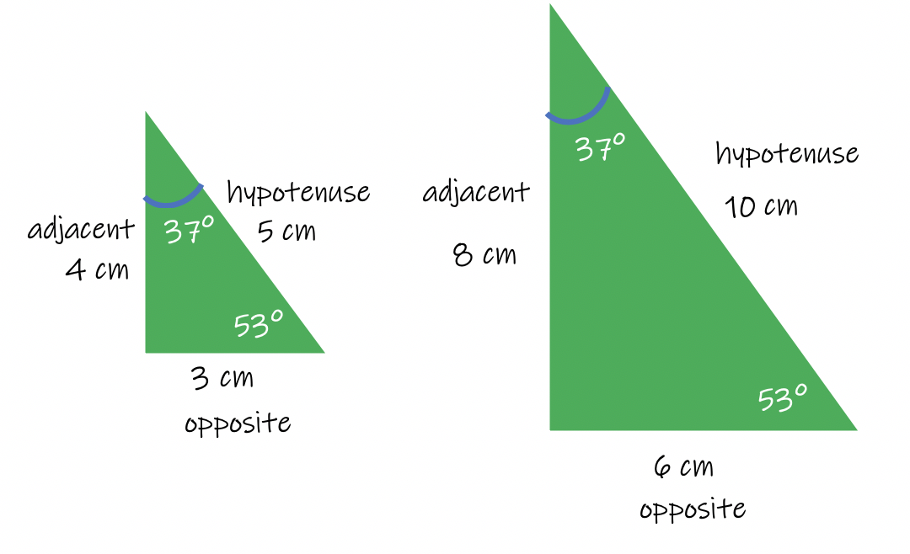
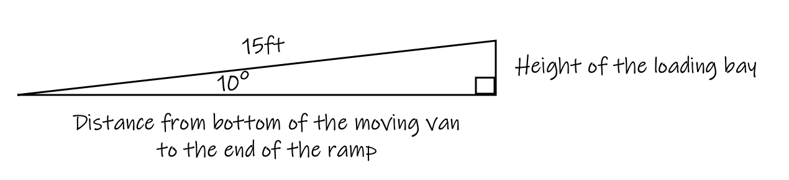

Trigonometry is a branch of mathematics that involves dealing with triangles. Trigonometry gives us the ability to solve a triangle, which may not seem like a big deal, until mankind started finding its uses everywhere.
This is an introduction to trigonometry.
Trigonometry exists because of a concept called Similar Figures. Two figures are similar if the ratios of each pair of corresponding sides are equal, or three pairs of angles are congruent. The triangles must be Right Triangles.
Example of similar triangles:
The two left-hand sides of each triangle are called corresponding sides. The two right-hand sides are called corresponding sides. The two bottom sides are called corresponding sides.
There are always three pairs of corresponding sides in two similar triangles.
The same thing is true about each pair of angles. The bottom-left angle is corresponding to the other bottom-left angle, the two angles on the right are called corresponding angles, and the two angles at the top are called corresponding angles.
There are always three pairs of corresponding angles in two similar triangles.
When comparing a triangle to one similar to it, there are three different ways used to compare any two sides of the triangle.
The three ratios are:
When filling in the ratios, it does matter which side of the triangle that you call opposite, adjacent, and hypotenuse. This is dependent on the reference angle, one of the two acute angles. It does not matter which angle you use as the reference angle, but you should only choose one. The first image shows the labels according to the bottom-right corner angles as your reference angle.

The following image shows the triangles labeled if you chose the top-angle as the reference angle.
Using our original example, let's label the sides and angles. 
Let's use these measurements to fill in the following table.
Now it doesn't appear to be much, but look what happens when we turn each fraction into a decimal (numerator divided by denominator):
The important pattern to notice here is the value is the same for both the small and large triangle; implying the value is constant regardless of the size of the triangle.
If we re-label the triangle and use the 53° angle as our reference angle, and we simplify each fraction, notice again the values for the small and large triangles are the same. Filling in each value we get: And simplifying each fraction we get this: Notice again the values are the same as you go across the rows. Even though we had different values due to using the other reference angle.
Since the three different ratios are constant for any sized pair of similar triangles, they decided to give each of the three ratios a name. They named them Sine, Cosine, and Tangent.
Now, using a calculator, if you type in each expression, you should get the same answer as we got in the examples. Your calculator has been programmed for every possible angle degrees and triangle. How cool is that!
When using Sine, Cosine, and Tangent to solve Trig problems, we will be given one angle degree and one side length of the triangle, and we will be asked to solve for one of the two remaining side lengths. Because we know the answer since it has been programmed into your calculator, we just need to use a simple step called cross multiplication to get the answer.
Example 1:
Henry stands fifteen feet from the base of a light post. The angle the ground makes with the top of the pole is 40°. Calculate the height of the lamp post.
Solution: What do we know?
Since we know there is a 40° angle at the base of the triangle, this will be our reference angle. Therefore the side labeled 15 ft is adjacent to the angle. The height of the triangle is opposite the reference angle.
The angle is 40°, the adjacent = 15, the opposite = h Now we pick from the three trig formulas listed earlier: Sine, Cosine, and Tangent.
Since we are working with the adjacent side and opposite side of the triangle, we must pick between the three formulas the one that involves the adjacent and the opposite. Looking at the trig formulas, the Tangent formula will be the correct one to use. Our answer will be the height of the lamp post.
Solution:
Substituting in the measurements into the formula, we get this:
The height of the lamp post is approximately 12.6 feet.
Example 2:
Edward is contemplating a swim across the pond to his cabin, but he wants to know how far it will be. He knows the distance on the further shore to be 500 ft, and he knows his angle of sight is 70°. The distance to be swimmed is the unknown value, d.
Solution:
The reference angle is 70°, the opposite side is 500 ft, and the adjacent side is the unknown value, d. Looking again at our trig formulas, we need to pick the formula that involves the opposite and the adjacent.
Again, we will use the Tangent formula to solve this problem. The answer will be the distance he will have to swim to get across the pond.
Solution:
Edward will have to swim 182 feet to cross the pond.
Example 3:
Johnathan wants to cut down a tree next to his house. He will tie a rope to the top of the tree so that he can make it fall over away from the house when he cuts it down. The distance between Johnny and the tree is 20 ft. The angle the rope makes with the ground is 60°. How long of a rope will Johnny need to cut down the tree?
Because the hypotenuse of the right triangle is representative of the length of the rope, we will solve for the hypotenuse. 20 ft is the side of the triangle adjacent to the reference angle. So we need to select the formula that involves the adjacent and the hypotenuse. We will need to select the Cosine formula.
Solution:
Johnathan will need to have approximately 40 feet of rope to cut down the tree.
Example:
Veronica is moving to a new house. She is using a moving van that has a 15 ft ramp and makes a 10° angle with the ground. How tall is the moving van's loading bay?
The hypotenuse, which is represented by the ramp, is 15 ft long. The reference angle is 10°. The height of the loading bay is the side of the triangle opposite the reference angle. So we will be working with the formula that uses the hypotenuse and the opposite sides.

For this problem we will use the Sine formula.
The loading bay is approximately 2.6 ft tall.
Notes:
In order to get the answers when using trigonometry, you must have a calculator, or print off a Trig Table from the Internet.
Once all your values are substituted into the equation, you cross-multiply just like you would for two normal fractions. Don't let the words in the formula confuse you with the steps to cross-multiply.
Round your answers to one decimal place. For help on rounding, watch the Youtube video below about rounding numbers.
For further information about Trigonometry, please see the Trigonometry Module.